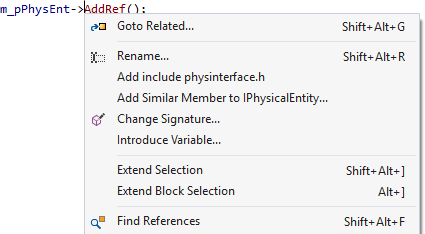

VA Context Menu
Rely on the VA Context Menu instead of individual shortcuts for features of Visual Assist. Content of the menu varies with current file, symbol, and position in the text editor. Open the menu via shortcut to VAssistX.OpenContextMenu, or modified mouse button assigned in the options dialog of Visual Assist.
